library(igraph)
library(ADAPTSNA)13 Visualisations - Intermediate
In the previous chapter, we talked about creating clean network visuals that are sized and proportioned well enough so as to reduce the visual noise of networks. Here, we take a step further and focus on telling a story through network visualisation.
| LEARNING ELEMENTS - Data Practices |
|---|
|
First, bring in the data on Grime musicians and their collaborations with each other in 2008. Then clean the network a little bit by deleting the self-loops.
grime_edge_list <- load_data("GRIME_2008_Edge.csv", header = TRUE)
grime_08 <- graph_from_data_frame(d= grime_edge_list, directed = TRUE)
plot(grime_08)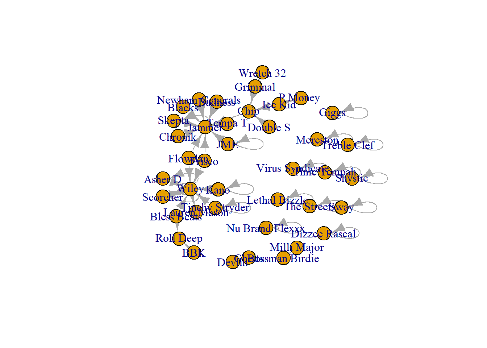
grime_08_clean <- delete.edges(grime_08, E(grime_08)[which_loop(grime_08)])
plot(grime_08_clean)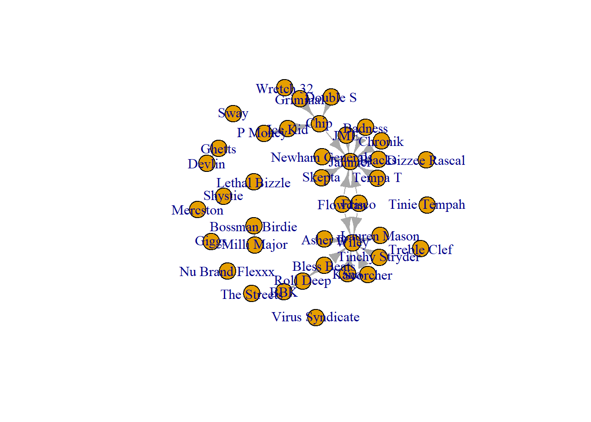
Now we are ready to start our storytelling in networks! We can produce visualisations that tell a story about the individuals in the network and the relationships that exist between them. In general, you can alter the network visualisation’s characteristics to tell a story.
The network contains information about the individuals that we can draw out in our visualisation. This information is based on the relationships they have with others in the network.
13.1 Visualising Prominent and Influential Nodes
There are multiple measurements of centrality and we will cover more of them in Chapter 16. For now, we will create visualisations aimed at highlighting prominent and influential nodes in the network using two measures of centrality, degree and betweenness. For more on those measures, hand tight and read later chapters.
For now, consider centrality as a way of understanding an individual’s position within a network. You may have heard someone described as “well-connected”—a phrase that typically refers to a person’s influence, power, or popularity within a social context. Centrality measures, grounded in graph theory, provide a formal means of quantifying this idea.
Individuals with many direct connections—those with high degree centrality—are considered prominent because they maintain relationships with numerous others in the network. Their visibility and accessibility position them at the center of group interactions. In contrast, individuals with high betweenness centrality—those who frequently lie on the shortest paths between others—are described as influential. This is because they occupy strategic bridging positions that allow them to mediate, facilitate, or even control the flow of information or resources across the network.
13.1.1 Prominence
There are two main ways that we can demonstrate a node’s prominence or influence in a network. We could alter the size of the nodes to be commensurate to their score. So, if a node has a degree centrality of 10, their size would be 10 compared to another node with a score (and therefore node size) of 5. The difference in size is useful to demonstrate that one is more prominent than the other. Alternatively, we could change the labels to reflect those scores.
par(mar = c(5,0,0,0))
plot(grime_08_clean, vertex.size = degree(grime_08_clean)*2, edge.arrow.size = 0.5, sub = "Node Size Presents More Prominent Artists")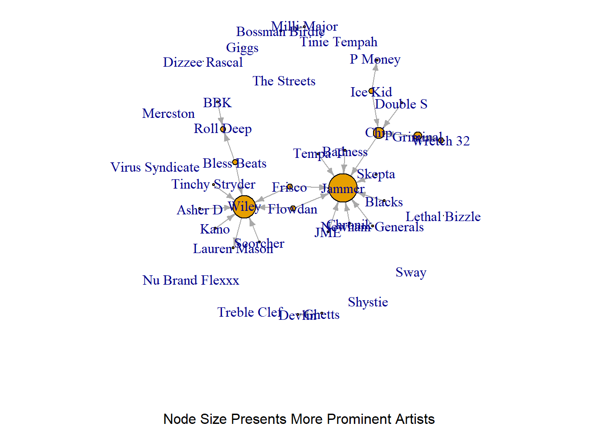
What does the above visualisation tell you about this network? Who are the most/more prominent artists in this network?
Based on that network we can clearly see two artists ‘pop’ from the visualisation more than others. This suggests that this group has two very prominent artists.
An issue with using node size to generate comparisons between nodes is that seeing the difference between someone who has a score of 9 compared to 10 might be difficult since they are close in size. A workaround is to use the node labels to reflect the score. That way people can read the scores directly.
par(mar = c(0,0,0,0))
plot(grime_08_clean, vertex.label = degree(grime_08_clean))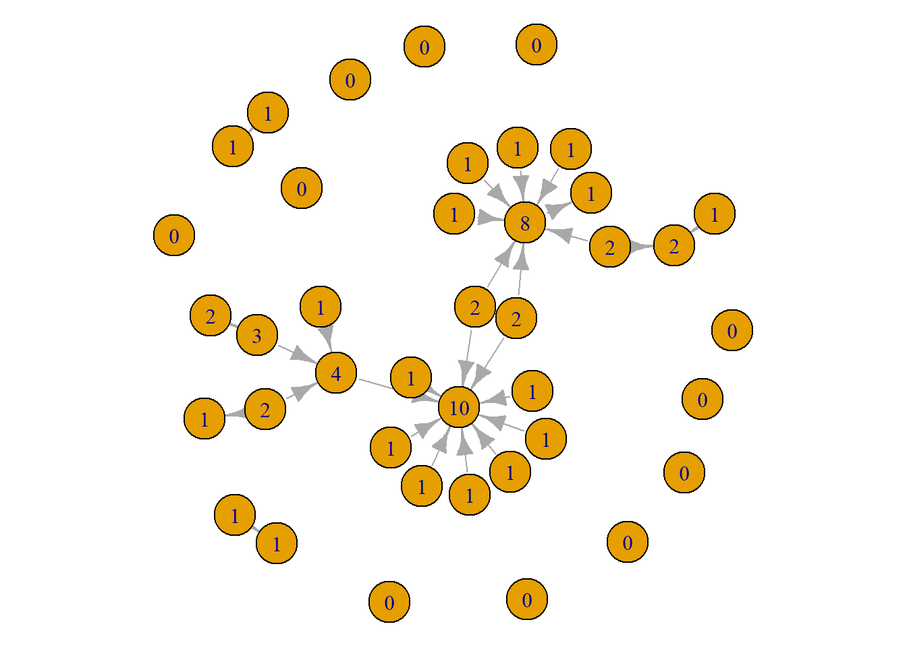
This tells the same information as the first visual. However, there are some pros and cons to this approach. The positives are that viewers can easily see the differences in scores. The drawbacks are that it produces a slightly more noisy visualisation. A viewer will neet to look through the whole network to identify those with high scores. With this network, it might be better to use the size since the visual looks a little cleaner. As always, trial and error! Give both a go and see what works better. Or, present both!
13.1.2 Influence
Next, we can do the same thing to demonstrate influential individuals in this network.
par(mar = c(0,0,0,0))
plot(grime_08_clean, vertex.size = betweenness(grime_08_clean)*2, edge.arrow.size = 0.5)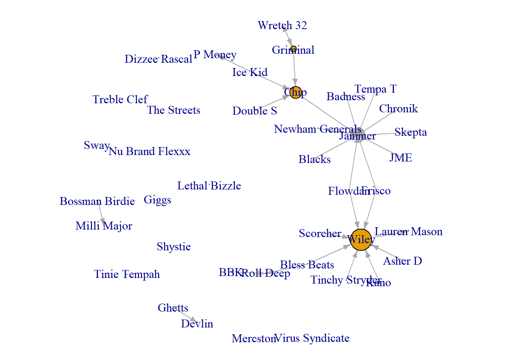
Again the same limitations and strengths apply here as they do when visualising prominence.
par(mar = c(0,0,0,0))
plot(grime_08_clean, vertex.label = betweenness(grime_08_clean))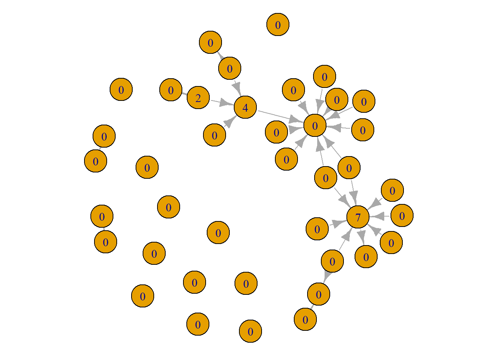
Notice here, that there different artists appear to be influential that are not very prominent and some that are prominent but not influential. This has to do with the differences between the measures since they capture different things. Again, for more on this, read Chapter 16.
13.2 Visualising Relationships
Next, providing we have the information, we can tell stories about the relationships that exist between nodes. This section relies on the assumption that the network has information about the edges. We have already covered a few things (see Chapter 7) but will go over a few other things here. In this network we have an edge weight that reflects the number of collaborations that the artists have had. Again, you can change the size (width) of the edge or add labels to the edge that reflects the edge weight.
Here, thicker edgest reflect more collaborations between the artists. This clearly demonstrates connections in the network that are ‘stronger’ than others.
par(mar = c(0,0,0,0))
plot(grime_08_clean, edge.width = E(grime_08_clean)$collab_weight, edge.arrow.size = 0.5, vertex.size = 6, vertex.label = NA)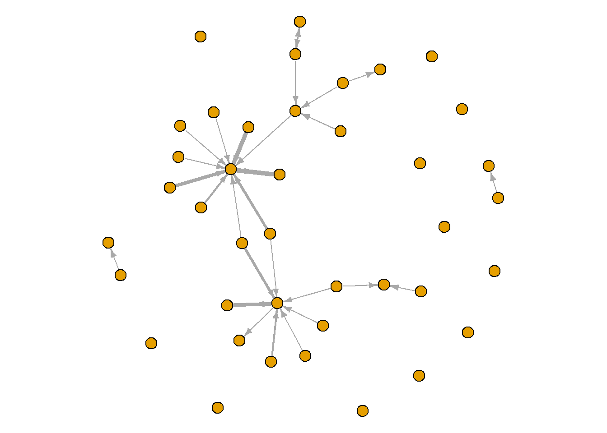
The labels provide the exact amount. You might consider showing the labels of only those what have a certain (or higher than a certain) amount since showing labels on all edges gets a bit noisy.
par(mar = c(0,0,0,0))
plot(grime_08_clean, edge.width = E(grime_08_clean)$collab_weight, edge.label = E(grime_08_clean)$collab_weight, edge.arrow.size = 0.5, vertex.size = 6, vertex.label = NA) 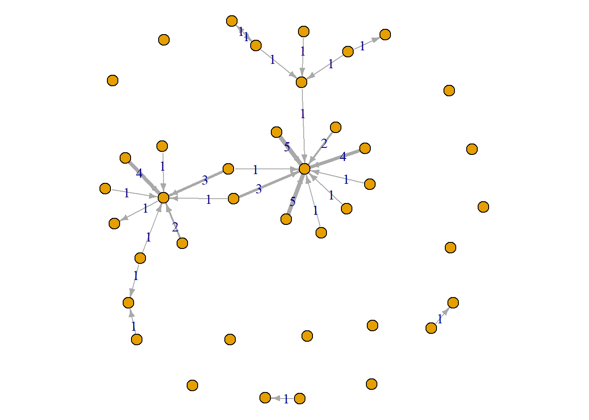
13.3 Node Level Characteristics
Finally, you can combine node-level characteristics with these other visualisations to tell more stories in your visualisation.
Here, I attach data external to the network (i.e. node characteristics) and visualise those. I bring in a separate .csv file that has various variables that pertain to the nodes. These are fake characteristics that I made up. Take a look at this to see what we have available. 2 variables - fake sales (continuous) and the artist’s sex (categorical - dichotomous)
grime_nodes <- load_data("GRIME_2008_Nodes.csv")
head(grime_nodes) node fake_sales sex
1 Asher D 10 m
2 Dizzee Rascal 20 m
3 Lethal Bizzle 50 m
4 Wiley 70 m
5 Treble Clef 100 m
6 Shystie 95 fNow we can create a network object that has both the network data and the node characteristics. This section uses the vertices = argument which tells R that there are edges and node characteristics as part of the network. I also clean the selfloops from this edgelist.
grime_full <- graph_from_data_frame(grime_edge_list, vertices = grime_nodes, directed = TRUE)
grime_full_clean <- delete.edges(grime_full, E(grime_full)[which_loop(grime_full)])We can use these node attributes to visualise more about the network
sex <-ifelse(V(grime_full_clean)$sex == "f", "red", "white")
par(mar = c(0,0,0,0))
plot(grime_full_clean, vertex.color = sex)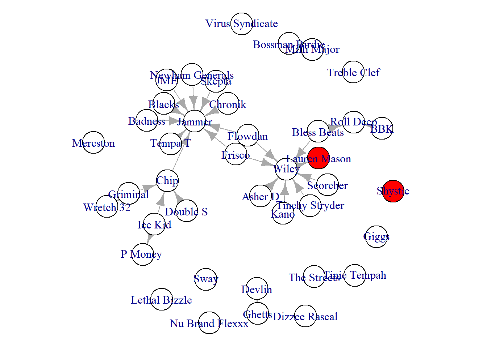
We can also set the vertex characteristics to reflect the continuous variable. In this case, the artists’ fake sales.
par(mar = c(0,0,0,0))
plot(grime_full_clean, vertex.size = V(grime_full_clean)$fake_sales/100)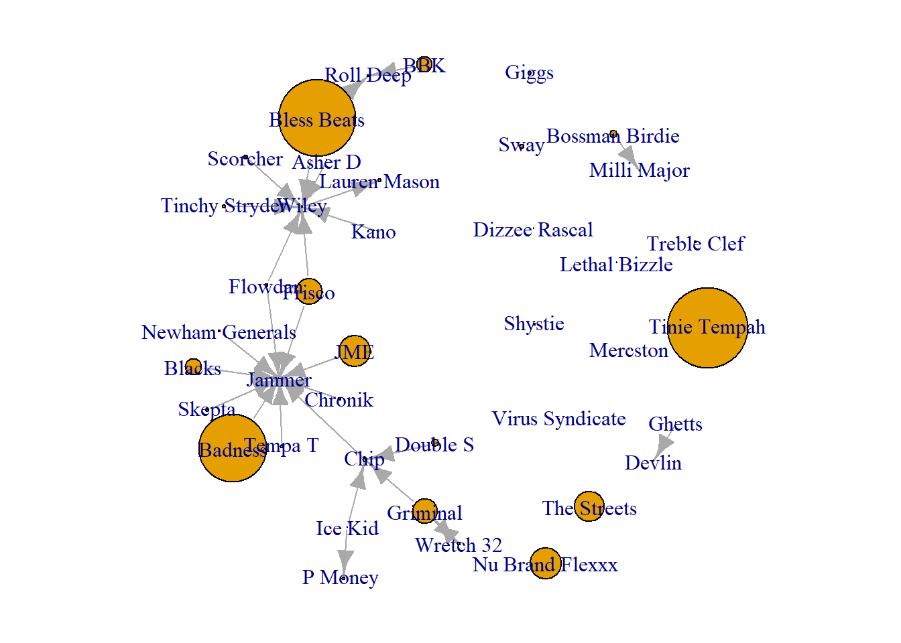
Finally, we can combine some of this information with our other principles of intermediate visualisation to tell different stories. For example, creating a network visualisation showing the sex of the artist alongside their prominence. Take a look at this visualisation below and see what it tells us.
par(mar = c(5,0,0,0))
plot(grime_full_clean, vertex.size = degree(grime_full_clean)*2, vertex.color = sex, edge.arrow.size = 0.5, vertex.label.cex = 0.75, sub = "Node Size Relfects Artist Prominence \n Red = Female, White = Male")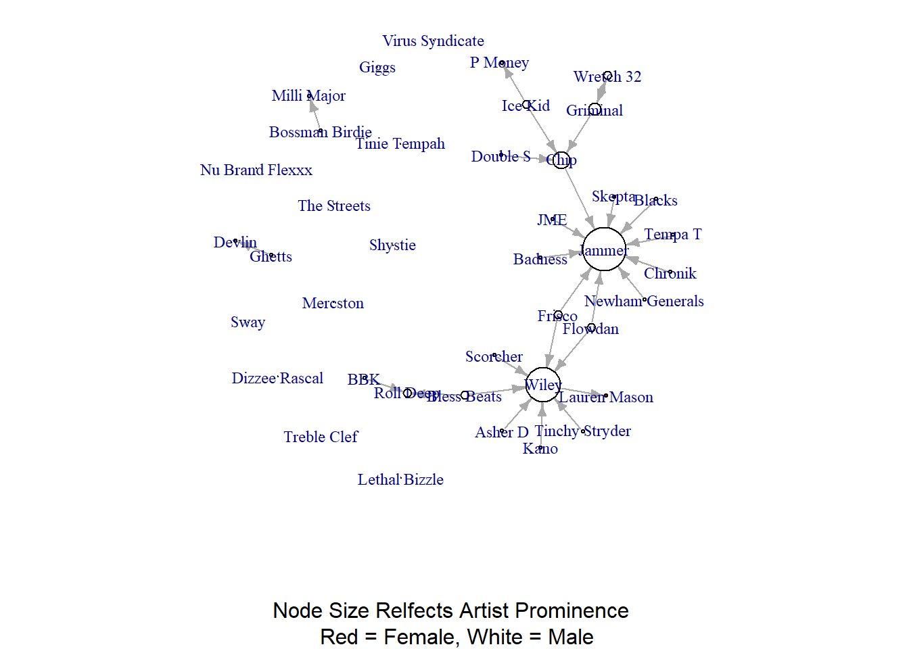
Notice that I multiply the degree score by two in the vertex.size option? I did this to increase the size of all nodes to better visualise the lone red node! Since we have multiplied all by the constant (2) the comparison between the sizes of the nodes are just as valid. What story is there then? that most prominent artists in Grime are male in 2008.
13.4 Summary
Here we have covered how to tell stories using network visualisation. You can emphasise indviiduals in the network based on their prominence or influence. You can also use node-level characteristics as part of this story-telling as well.